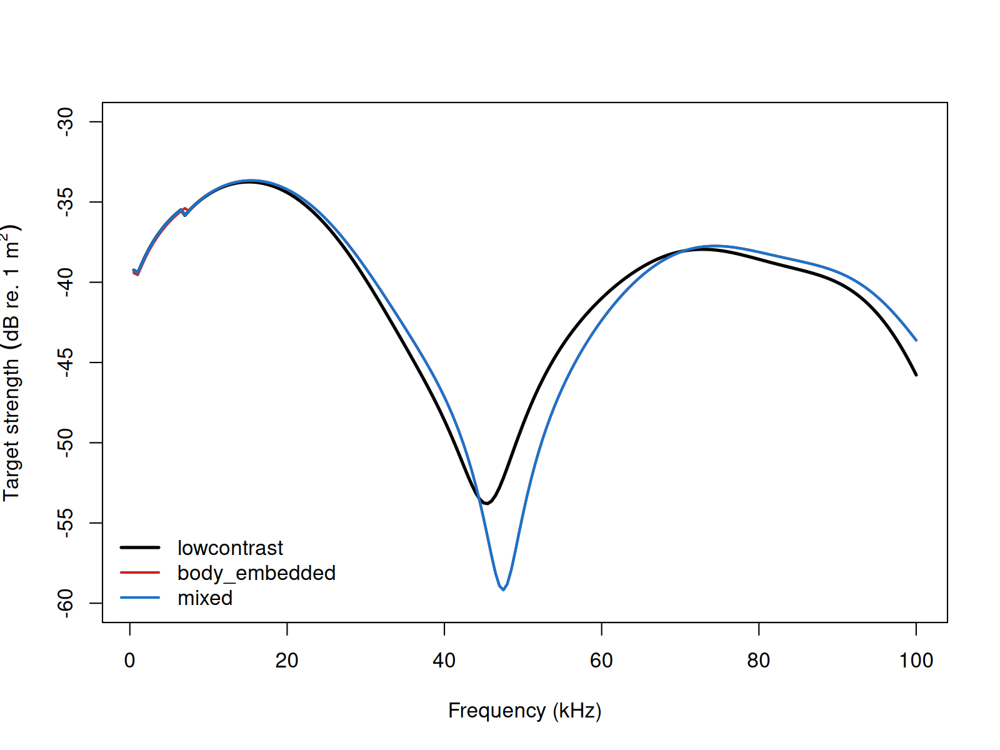
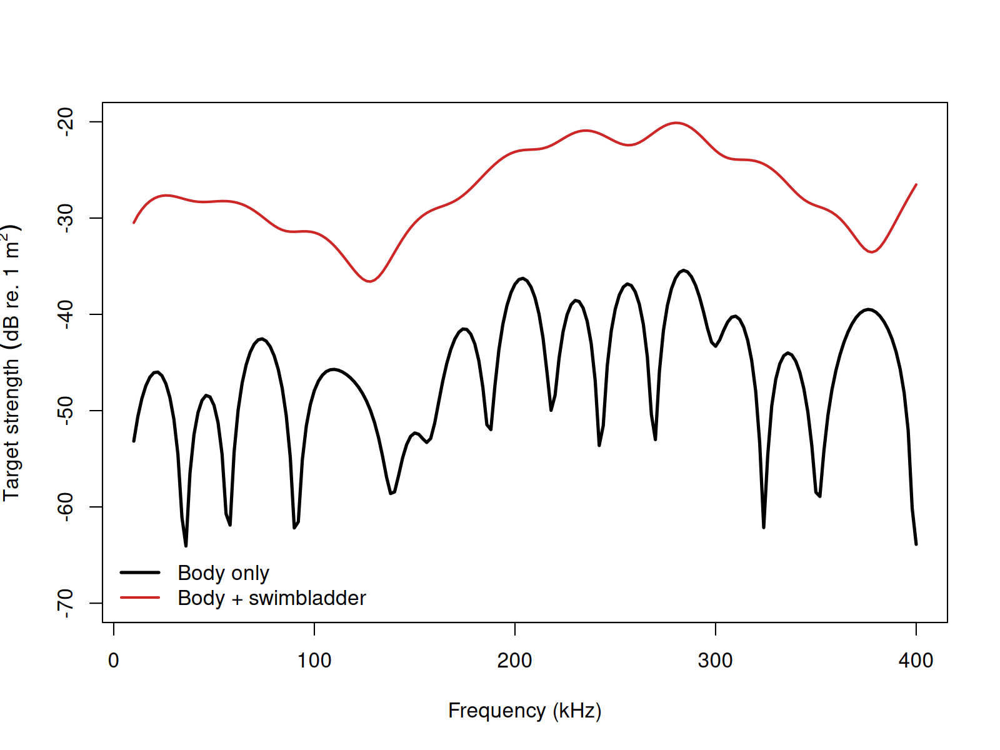

acousticTS implementation
Benchmarked Validated
Model-family pages: Overview Implementation Theory
These pages follow the composite body-plus-swimbladder fish modeling literature initiated for cod and later generalized in open software implementations (C. S. Clay 1991; Clarence S. Clay and Horne 1994; Gastauer 2025).
The acousticTS package uses object-based scatterers, so the KRM workflow follows the same broad structure used elsewhere in the package: define the geometry, attach material meaning to the body and any internal inclusion, evaluate the model over the desired frequency range, and then inspect the returned response carefully enough to understand what part of the target is driving it. For KRM, the main structural choice is whether the target is represented as a fluid-like body only or as a body plus an internal strongly contrasting inclusion such as a swimbladder.
This matters because KRM is not just a body-shape model. It is a composite body-plus-inclusion model. Readers should therefore treat object construction as part of the scientific interpretation rather than just a data-formatting step.
Fish-like object generation
The example below creates a simple body shape and an embedded
swimbladder shape with arbitrary() and passes both to
sbf_generate().
library(acousticTS)
body_shape <- arbitrary(
x_body = c(0.00, 0.04, 0.09, 0.15, 0.22, 0.28),
w_body = c(0.00, 0.018, 0.028, 0.030, 0.018, 0.00),
zU_body = c(0.000, 0.010, 0.016, 0.017, 0.010, 0.000),
zL_body = c(0.000, -0.010, -0.016, -0.017, -0.010, 0.000)
)
bladder_shape <- arbitrary(
x_bladder = c(0.06, 0.10, 0.14, 0.18, 0.21),
w_bladder = c(0.00, 0.008, 0.012, 0.008, 0.00),
zU_bladder = c(0.000, 0.004, 0.006, 0.004, 0.000),
zL_bladder = c(0.000, -0.004, -0.006, -0.004, 0.000)
)
fish_object <- sbf_generate(
body_shape = body_shape,
bladder_shape = bladder_shape,
density_body = 1070,
sound_speed_body = 1570,
density_bladder = 1.2,
sound_speed_bladder = 340,
theta_body = pi / 2,
theta_bladder = pi / 2
)
fish_object## SBF-object
## Swimbladdered fish (SBF)
## ID:UID
## Body dimensions:
## Length:0.28 m(n = 5 cylinders)
## Mean radius:0.0088 m
## Max radius:0.017 m
## Bladder dimensions:
## Length:0.15 m(n = 4 cylinders)
## Mean radius:0.0028 m
## Max radius:0.006 m
## Body material properties:
## Density: 1070 kg m^-3 | Sound speed: 1570 m s^-1
## Bladder fluid material properties:
## Density: 1.2 kg m^-3 | Sound speed: 340 m s^-1
## Body orientation (relative to transducer face/axis):1.571 radiansThis object already encodes the key KRM assumptions. The body and bladder are described separately, their material properties are assigned separately, and the orientation of each is carried explicitly. That separation is important because the KRM assigns different scattering logic to weakly contrasting body tissue and to the strongly contrasting internal inclusion. If the geometry or placement of the bladder is unrealistic, the model may still run, but the interpretation of the result will no longer match the intended biological target.
Calculating a TS-frequency spectrum
frequency <- seq(18e3, 120e3, by = 6e3)
fish_object <- target_strength(
object = fish_object,
frequency = frequency,
model = "krm"
)This call evaluates the composite KRM response over the requested frequency grid. As with other approximations, it is worth choosing the grid with the interpretation in mind. A broader sweep is useful for seeing how the body-only and bladder-dominated regimes compare, while a narrower and finer grid may be more useful when the question is how strongly the bladder alters the spectrum over a particular band of interest.
Comparison workflows
Swimbladder variants
For fluid-only body targets, krm_variant is ignored
because only the body Kirchhoff term is evaluated. The argument matters
only for combined body-plus-swimbladder targets, where the model must
decide what surrounding medium is used in the swimbladder terms (Clay
and Horne 1994; Horne and Jech 1999).
In the high-ka swimbladder Kirchhoff term, acousticTS
uses the empirical factors:
A_{SB,s} = \frac{ka_s}{ka_s + 0.083}, \qquad \psi_{p,s} = \frac{ka_s}{40 + ka_s} - 1.05,
and the local oscillatory term:
\mathcal{L}_{SB,s} \propto A_{SB,s} \big[(k_H a_s + 1)\sin\theta\big]^{1/2} e^{-i(2k_H v_s + \psi_{p,s})}\Delta u_s,
where k_H is the wavenumber assumed
for the high-ka surrounding medium. In the
low-ka breathing-mode term, the relevant acoustic size
is:
ka_e = k_L a_e,
where k_L is the wavenumber assumed
for the low-ka surrounding medium.
The three named variants therefore encode the modelling assumption directly:
-
lowcontrast: apply the low-contrast approximation k_B \approx k in both swimbladder regimes, so k_H = k_L = k. -
mixed: use the body-medium wavenumber for the high-kaswimbladder term but the low-contrast approximation for the low-kabreathing mode, so k_H = k_B and k_L = k. -
body_embedded: use the body-medium wavenumber in both swimbladder regimes, so k_H = k_L = k_B. This is the most literal body-embedded reading of Clay and Horne (1994).

For the bundled sardine target over
12-400 kHz, the mixed and
body_embedded curves are numerically identical, so the
practical split is between the default lowcontrast spectrum
and the body-medium alternative.
::: ## Extracting model results
Model results can be extracted either visually or directly through
extract().
Accessing results
## frequency ka f_body f_bladder
## 1 18000 0.8670796 -0.0037916970+0.0028010791i -0.015359792+0.03079048i
## 2 24000 1.1561061 -0.0037174846+0.0030509836i -0.009925339+0.03590451i
## 3 30000 1.4451326 -0.0022443150+0.0017535684i -0.002942638+0.03895179i
## 4 36000 1.7341591 -0.0001611749-0.0006058531i 0.004822767+0.03981842i
## 5 42000 2.0231857 0.0014030682-0.0027506628i 0.012688057+0.03848878i
## 6 48000 2.3122122 0.0016354167-0.0033478067i 0.020024631+0.03507845i
## sigma_body sigma_bladder f_bs sigma_bs TS
## 1 2.222301e-05 0.001183977 -0.019151489+0.03359156i 0.001495172 -28.25309
## 2 2.312819e-05 0.001387646 -0.013642824+0.03895549i 0.001703657 -27.68618
## 3 8.111952e-06 0.001525901 -0.005186953+0.04070536i 0.001683831 -27.73701
## 4 3.930353e-07 0.001608765 0.004661592+0.03921256i 0.001559355 -28.07055
## 5 9.534746e-06 0.001642373 0.014091125+0.03573811i 0.001475773 -28.30981
## 6 1.388240e-05 0.001631484 0.021660048+0.03173065i 0.001475992 -28.30916At this stage, it is worth confirming more than the presence of a plotted curve. Readers should check that the returned frequencies match the request, that the target-strength scale is plausible for the assumed fish size and material contrasts, and that the result is being interpreted as a coherent composite response rather than as an isolated body or isolated bladder term.
Body-only versus body-plus-swimbladder
The most common practical comparison in KRM work is the contribution of the swimbladder relative to the fluid-like body.

This comparison is often the most informative first diagnostic because it isolates the physical reason the KRM exists. Holding the body geometry fixed while adding or removing the internal inclusion shows whether the total response is dominated by weakly scattering tissue, by the strong internal contrast, or by coherent interaction between both contributions.
For practical KRM work, the first inputs to revisit are usually:
- the body and bladder geometry, because the model assumes a sensible locally cylindrical segmentation,
- the relative placement and scale of the bladder inside the body, because that strongly affects the composite interpretation, and
- the material contrasts assigned to both regions, because they control whether the body remains weakly scattering and whether the bladder remains the dominant internal inclusion.
For more realistic biological examples, the bundled cod
and sardine datasets are the natural next objects to
inspect because they already package body and swimbladder geometry in
the format expected by the model.
Modal-series benchmark comparisons
The primary KRM implementation benchmark for the canonical gas-filled and weakly scattering shapes is the published modal-series reference solution for each isolated canonical case. The summary table below keeps that benchmark visible without mixing it with the separate software-compatibility checks for body-plus-swimbladder targets.
| Canonical case | Max abs. delta TS (dB) | Mean abs. delta TS (dB) | Elapsed (s) |
|---|---|---|---|
| Gas sphere | 7.91469 | 6.04116 | 0.01 |
| Weakly scattering sphere | 11.21090 | 0.47451 | 0.15 |
| Gas prolate spheroid | 7.36054 | 4.62751 | 0.00 |
| Weakly scattering prolate spheroid | 14.27193 | 0.46239 | 0.00 |
| Gas cylinder | 7.35632 | 6.19094 | 0.02 |
| Weakly scattering cylinder | 23.22115 | 0.59807 | 0.02 |
The modal-series table above remains the implementation benchmark for the canonical KRM targets.
Bundled fish compatibility checks
The bundled fish objects serve a different benchmark role from the
canonical modal-series targets above. There is no exact modal-series
reference for these segmented body-plus-swimbladder geometries, so they
are used only to check software-to-software agreement for the
krm_variant branches on realistic fish shapes.
| Object | Branch or comparison | Mean abs. delta TS (dB) | Max abs. delta TS (dB) |
|---|---|---|---|
sardine |
acousticTS lowcontrast vs
KRMr
|
1.58e-14 | 1.42e-13 |
sardine |
acousticTS lowcontrast vs
echoSMs low-contrast spectrum |
3.31e-14 | 5.54e-13 |
sardine |
acousticTS lowcontrast vs NOAA applet
spectrum |
0.00262 | 0.00496 |
sardine |
KRMr vs echoSMs low-contrast
spectrum |
3.85e-14 | 5.54e-13 |
sardine |
KRMr vs NOAA applet spectrum |
0.00262 | 0.00496 |
sardine |
echoSMs low-contrast spectrum vs NOAA
applet spectrum |
0.00262 | 0.00496 |
sardine |
acousticTS body_embedded vs
echoSMs body-embedded spectrum |
3.37e-14 | 1.85e-13 |
sardine |
acousticTS mixed vs echoSMs
body-embedded spectrum |
3.37e-14 | 1.85e-13 |
sardine |
acousticTS mixed vs
acousticTS body_embedded
|
0.00000 | 0.00000 |
cod |
acousticTS lowcontrast vs
KRMr
|
1.33e-14 | 7.82e-14 |
cod |
acousticTS lowcontrast vs
echoSMs low-contrast spectrum |
5.36e-15 | 3.55e-14 |
cod |
acousticTS lowcontrast vs NOAA applet
spectrum |
0.00262 | 0.00498 |
cod |
KRMr vs echoSMs low-contrast
spectrum |
1.46e-14 | 8.53e-14 |
cod |
KRMr vs NOAA applet spectrum |
0.00262 | 0.00498 |
cod |
echoSMs low-contrast spectrum vs NOAA
applet spectrum |
0.00262 | 0.00498 |
cod |
acousticTS body_embedded vs
echoSMs body-embedded spectrum |
6.16e-15 | 5.68e-14 |
cod |
acousticTS mixed vs echoSMs
body-embedded spectrum |
6.16e-15 | 5.68e-14 |
cod |
acousticTS mixed vs
acousticTS body_embedded
|
0.00000 | 0.00000 |
Those values make the branch behavior explicit:
-
lowcontrastremains the default because it reproduces the low-contrast software family on both bundled fish objects. -
body_embeddedremains the literal body-medium alternative and lines up with the corresponding body-embedded spectrum. -
mixedis still exposed because it is a distinct literature convention, even though on both bundled fish frequency grids it collapses numerically ontobody_embedded.
So the two benchmark roles are now explicit:
- canonical modal-series tables for isolated-shape KRM implementation checks, and
- bundled-fish compatibility checks for the body-plus-swimbladder convention choice.